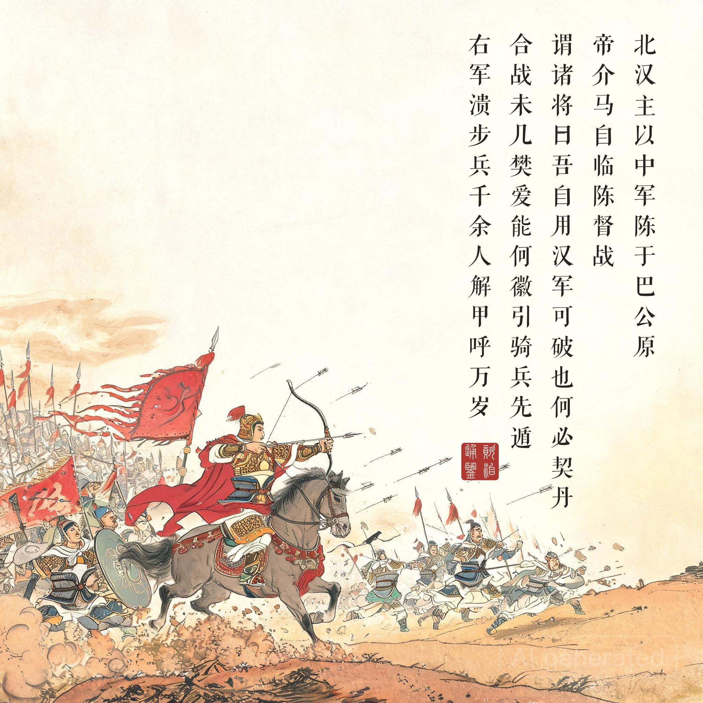
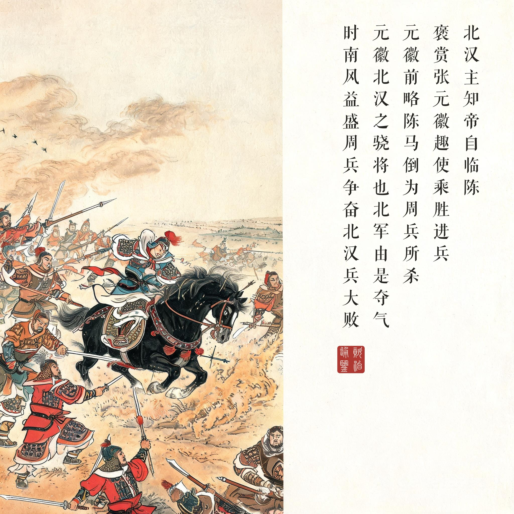
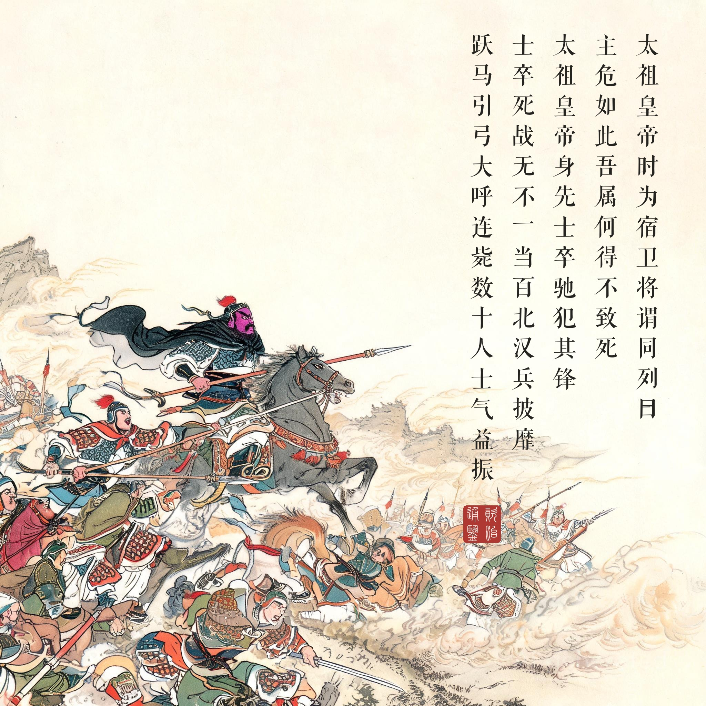
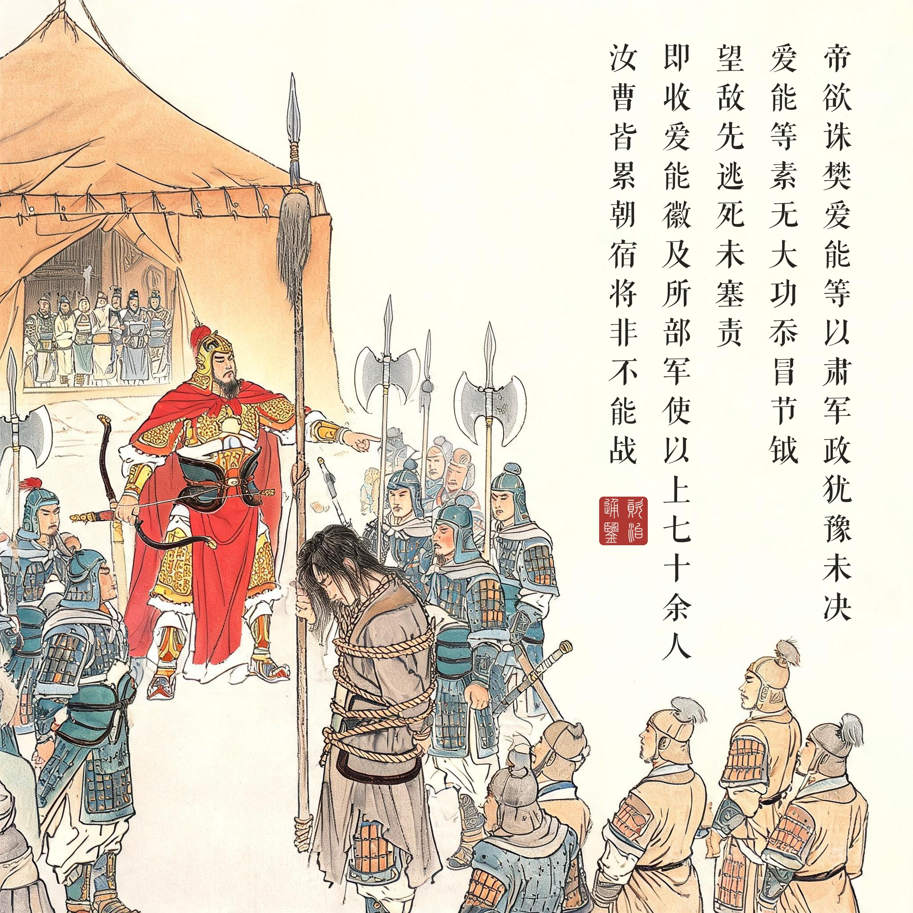
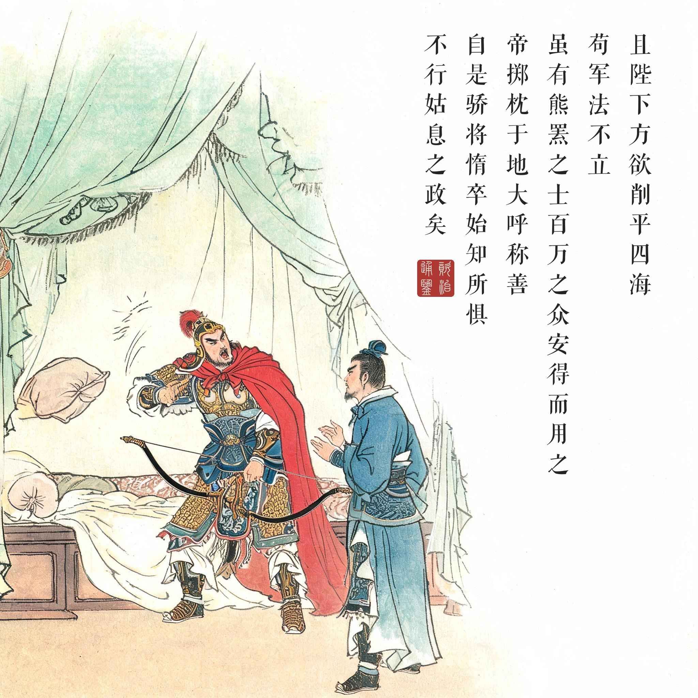

《资治通鉴 · 卷第二百九十一 · 后周纪二》太祖圣神恭肃文武孝皇帝下显德元年（公元 954 年）
（据 daizhigev20《资治通鉴》底本节录。前情：正月周太祖郭威殂，北汉主乘丧联契丹南犯）
北汉主以中军陈于巴公原，张元徽军其东，杨兗军其西，众颇严整。时河阳节度使刘词将后军未至，众心危惧，而帝志气益锐……帝介马自临陈督战。北汉主见周军少，悔召契丹，谓诸将曰：“吾自用汉军可破也，何必契丹！今日不惟克周，亦可使契丹心服。”诸将皆以为然。杨兗策马前望周军，退谓北汉主曰：“勍敌也，未可轻进！”北汉主奋髯，曰：“时不可失，请公勿言，试观我战。”……时东北风方盛，俄而忽转南风，北汉副枢密使王延嗣使司天监李义白北汉主云：“时可战矣。”北汉主从之。枢密直学士王得中扣马谏曰：“义可斩也！风势如此，岂助我者邪！”北汉主曰：“吾计已决，老书生勿妄言，且斩汝！”麾东军先进，张元徽将千骑击周右军。合战未几，樊爱能、何徽引骑兵先遁，右军溃。步兵千馀人解甲呼万岁，降于北汉。帝见军势危，自引亲兵犯矢石督战。太祖皇帝时为宿卫将，谓同列曰：“主危如此，吾属何得不致死！”又谓张永德曰：“贼气骄，力战可破也！公麾下多能左射者，请引兵乘高西出为左翼，我引兵为右翼以击之。国家安危，在此一举！”永德从之，各将二千人进战。太祖皇帝身先士卒，驰犯其锋，士卒死战，无不一当百，北汉兵披靡。内殿直夏津马仁瑀谓众曰：“使乘舆受敌，安用我辈！”跃马引弓大呼，连毙数十人，士气益振。殿前右番行首马全乂言于帝曰：“贼势极矣，将为我擒，愿陛下按辔勿动，徐观诸将破之。”即引数百骑进陷陈。北汉主知帝自临陈，褒赏张元徽，趣使乘胜进兵。元徽前略陈，马倒，为周兵所杀。元徽，北汉之骁将也，北军由是夺气。时南风益盛，周兵争奋，北汉兵大败，北汉主自举赤帜以收兵，不能止。杨兗畏周兵之强，不敢救，且恨北汉主之语，全军而退。……帝欲诛樊爱能等以肃军政，犹豫未决。己亥，昼卧行宫帐中，张永德侍侧，帝以其事访之，对曰：“爱能等素无大功，忝冒节钺，望敌先逃，死未塞责。且陛下方欲削平四海，苟军法不立，虽有熊罴之士，百万之众，安得而用之！”帝掷枕于地，大呼称善。即收爱能、徽及所部军使以上七十馀人，责之曰：“汝曹皆累朝宿将，非不能战。今望风奔遁者，无他，正欲以朕为奇货，卖与刘崇耳！”悉斩之。……自是骄将惰卒始知所惧，不行姑息之政矣。
北汉主把中军列阵于巴公原，张元徽军在东，杨兗（契丹军）在西，军容颇为严整。当时河阳节度使刘词的后军未到，周军人心危惧，而世宗志气更锐……世宗披甲乘马亲临阵前督战。北汉主见周军人少，后悔召了契丹兵，对诸将说：“我自己用汉军就能击破他们，何必契丹！今天不但要打败周，还要让契丹心服。”诸将都认为对。杨兗策马上前观察周军，回来对北汉主说：“是劲敌，不可轻进！”北汉主捋着胡子奋然说：“时不可失，请您别说了，且看我打仗。”……当时东北风正猛，忽然转成南风，北汉副枢密使王延嗣让司天监李义禀报：“可以开战了。”北汉主听从了。枢密直学士王得中扣住马缰苦谏：“李义该斩！这样的风向，哪里是助我们的！”北汉主说：“我计已决，老书生别胡说，再说连你一起斩！”指挥东军先进，张元徽率千骑冲击周军右翼。交战不久，樊爱能、何徽带骑兵先逃，右军崩溃。一千多步兵脱下铠甲高呼万岁，投降了北汉。世宗见军势危急，亲自率亲兵冒着箭矢擂石督战。太祖皇帝（赵匡胤）当时是宿卫将，对同僚说：“主上危到这个地步，我们怎能不死战！”又对张永德说：“敌气骄，力战可破！您麾下多左手善射的，请带兵从高处向西出击作左翼，我带兵作右翼夹击。国家安危，在此一举！”永德依计，各率两千人进战。太祖皇帝身先士卒，冲锋陷阵，士兵死战，无不以一当百，北汉兵披靡。内殿直马仁瑀对众人说：“让皇上的车驾受敌，还要我们干什么！”跃马拉弓大呼，接连击毙数十人，士气更振。殿前右番行首马全乂对世宗说：“敌人已到极限，马上就要被我们擒获，愿陛下按辔不动，慢慢看诸将破敌。”随即率数百骑冲入敌阵。北汉主得知世宗亲临战阵，重赏张元徽，催他乘胜进兵。元徽上前掠阵，战马倒地，被周兵所杀。元徽是北汉的骁将，北军因此丧气。当时南风更盛，周军奋勇，北汉军大败，北汉主亲自举红旗收兵，也收不住了。杨兗畏惧周军之强，不敢相救，又记恨北汉主先前那句话，全军撤退。……世宗想诛樊爱能等以肃军政，犹豫未决。己亥日，白昼躺在行宫帐中，张永德侍立在旁，世宗就此问他。永德答：“樊爱能等素无大功，愧居节钺之位，望敌先逃，死了也不足以抵罪。陛下正要削平四海，军法若不立，纵有熊罴之士、百万之众，又怎么用得上！”世宗把枕头摔到地上，大声叫好。立即逮捕樊爱能、何徽及其所部军使以上七十多人，斥责道：“你们都是历朝老将，不是不能打。今天望风而逃，没有别的缘故，就是想拿朕当奇货，卖给刘崇罢了！”全部斩首。……从此骄横的将领、怠惰的士兵才知道害怕，朝廷不再实行姑息的政治了。
五代乱的病根与一剂猛药。五代五十四年换了五个朝代，病根只有一个：兵骄将惰、主弱臣强——军队是私产，皇帝是奇货，谁都能卖。高平之战把这个病灶演到了最恶性的一幕：皇帝亲临、右军先逃、逃将沿途抢劫自家辎重、散布败讯——按五代剧本，柴荣的下一站就是被部下出卖。而柴荣的解法简单到残忍：亲自犯矢石（把皇帝的命押上阵）、用宿卫血战（把亲军变成唯一的暴力核心）、然后把逃将连根斩到军使以上七十余人（把“卖主”的期权市场永久关闭）。《通鉴》记他斩将前的踌躇与张永德帐中那段对话——军法的确立先是两个人的想清楚，然后才是七十颗人头。
两代皇帝的相遇。高平之战最深远的事件不在战场，在阵前那两个人：三十四岁的柴荣说“国家安危，在此一举”，二十七岁的赵匡胤说“主危如此，吾属何得不致死”。左翼张永德、右翼赵匡胤各两千人，把崩盘的战线翻了过来——五年后柴荣病逝，再一年赵匡胤陈桥兵变，那支高平血战里淬出来的殿前军就是黄袍加身的主角。读画看第三幕：身先士卒的年轻宿卫就是后来的宋太祖——历史在这一格画面里完成了交接。
长平之地的轮回。高平即古长平——六百年前白起坑赵卒四十万的地方。《通鉴》成书于宋，起笔三家分晋（礼崩）、收笔于世宗显德（天下将重归一统）——高平之战是全书倒数第三卷的关键帧：北汉大败后再无力南下，契丹领教了周军战力，世宗获得整军与南征的时间窗。司马光编到这一卷时北宋早已立国，他记录的这个年轻皇帝“自临陈督战”“掷枕大呼称善”，既是史实，也是给当朝的一份镜子：五代之乱在军法立、姑息止的那一刻，就注定要结束了。